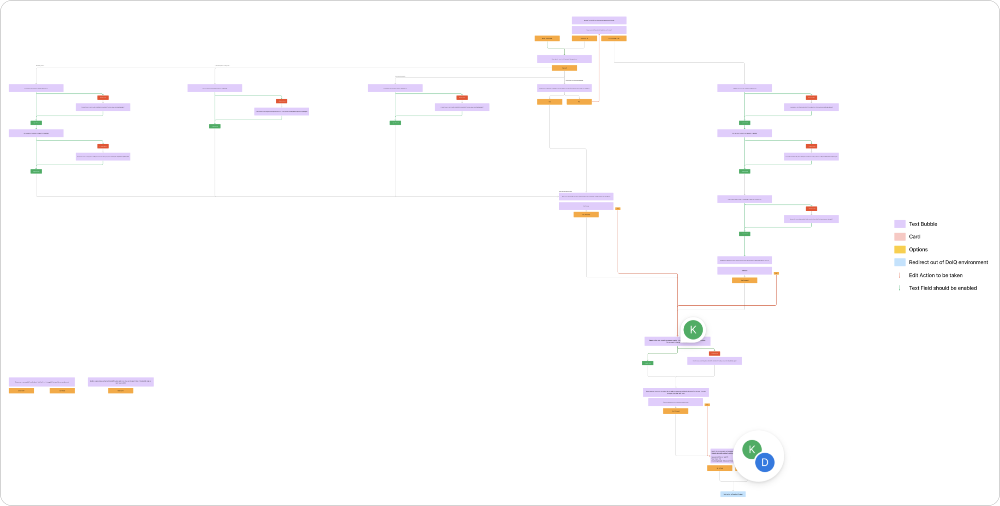
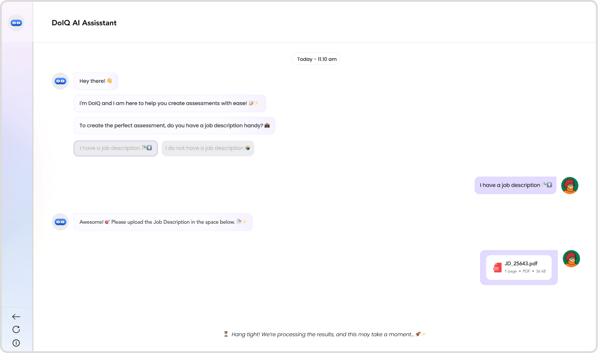
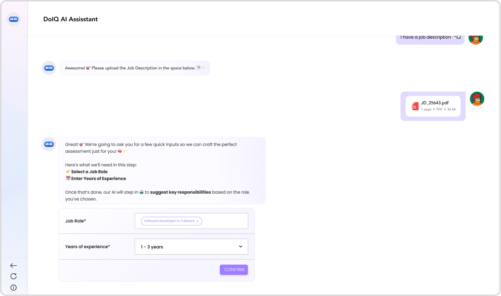
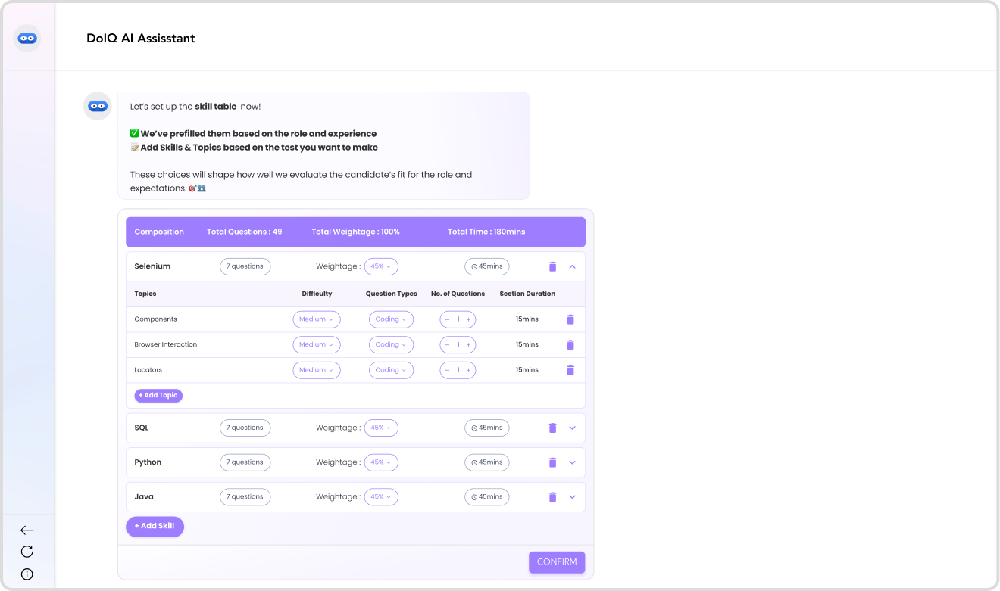
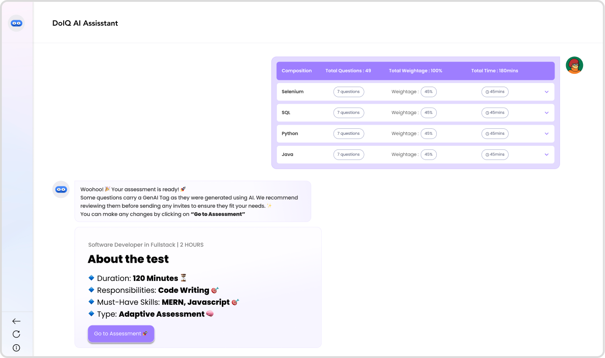

Designing Self Serve Intelligence for Assessment Creation
Role
Lead UX Designer · UX Strategy
Company
Naukri.com / Doselect
Product
DoIQ Assessor
Tools
Figma · Jira
DoSelect already had an assessments product backed by a large question library for both tech and non-tech roles. On paper, the system worked.
In reality, assessment creation depended heavily on a Content & Delivery (C&D) team, who collaborated with recruiters and hiring managers to manually curate tests.
This led to:
Recruiters lacked the confidence and domain knowledge to create assessments on their own, making the experience slow, opaque, and operationally expensive.
This wasn't just a UX problem — it was a scalability and automation problem.
At its core, the challenge was to move DoSelect from a service-assisted workflow to a self-serve, AI-assisted experience — without sacrificing assessment quality.
We needed to answer a few hard questions:
This project required deep collaboration across Product, Engineering, and Content teams. My role focused on UX strategy and system design, not just screens.
Design process highlights:
This project evolved in public, with continuous iteration rather than a single "big reveal."
Early exploration narrowed down to two possible directions: a structured, form-heavy flow, or a chatbot-based, conversational flow.
We chose the chatbot approach. Because recruiters don't think in rigid fields — they think in context, intent, and trade-offs. A conversational interface allowed us to:
This decision became foundational to DoIQ's UX and AI strategy.
First Conversation Flow

process.
In response, the flow was simplified into a single-step conversational interface that asked recruiters for role name, years of experience, assessment duration, must-have skills and good-to-have skills. This felt intuitive and significantly reduced friction, but cracks appeared quickly once the system was used in real hiring scenarios.
early feedback.
Feedback from recruiters and hiring managers revealed deeper issues:
The system demonstrated intelligence, but without sufficient contextual grounding, it couldn't be trusted to operate independently.
We shifted strategy: instead of relying on the library alone, we asked recruiters for richer structure. This helped AI reason better about:
However, we created a new problem.
what did we learn from the second iteration?
The process worked — but at a cost.
We had optimized for AI accuracy, but compromised UX efficiency.
The final direction reduced complexity while increasing clarity. The entire flow was condensed into three structured steps:




step {{ stepNo }} / 4{{ stepTitle }}
{{ stepDesc }}
& Voila! Your assessment is ready to be taken.
While refining this system, we identified a new assessment type: Adaptive Assessments.
This enables one assessment per role, more accurate skill measurement, and strong applicability in Learning & Development use cases rather than recruitment.
This insight emerged directly from system-level UX thinking, not feature requests.
Client accounts — 20,539 total questions · MCQs: 19,941 · Coding: 598
Internal accounts — 8,350 total questions · MCQs: 7,955 · Coding: 395
Internal teams began creating assessments independently using DoIQ Assessor, validating the self-serve vision.
Clients reported:
Most importantly, it reinforced that good AI UX isn't about replacing humans — it's about augmenting decision-making with clarity and confidence.
Back to portfolio
← All workNext case study
Doselect Access Management ↗︎